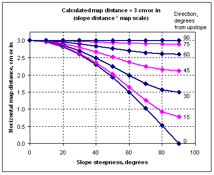
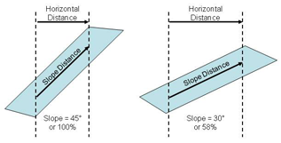

|
Slope vs Horizontal Map Distance Tool |
When you select the option Display output distances in map units from the Module Selection dialog, the following slope distances (the distance along the ground) are converted to map distances:
- Surface spread distance [SURFACE]
- Crown spread distance [CROWN]
- Forward spread distance [SIZE]
- Backing spread distance [SIZE]
- Fire length [SIZE]
- Maximum fire width [SIZE]
- Spotting distance [SPOT]
Map distance is found by multiplying slope distance by the map scale. This is not technically correct. But because of the many variables that exist in the real world, the difference between slope distance and horizontal distance is not critical.
We include this tool to do the conversion in case you want to make the correction before you plot a distance on a map.
This plot shows the horizontal map distance from the calculated map distance, the maximum slope steepness, and the direction of the distance with respect to upslope. This example is for a calculated map distance of 3 cm or in. The largest difference is for very steep slopes and for distances that are along the steepest part of the slope.
|  |
This diagram illustrates the difference between slope distance and horizontal distance for 45- and 30-degrees slopes. The slope distance in both cases is the same.
|  |
Links
BehavePlus On-Line Documentation, February 11, 2011.